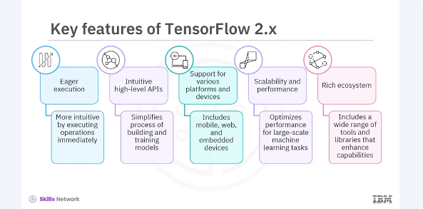
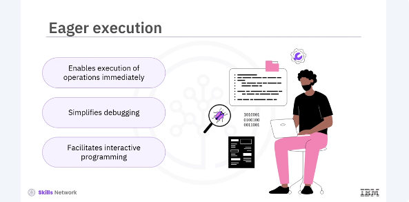
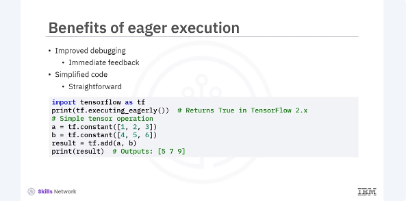
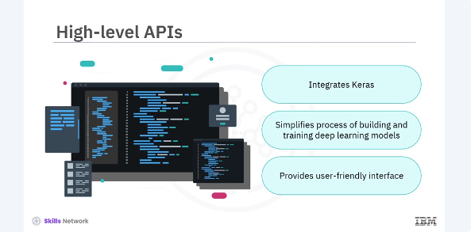
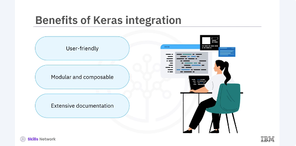
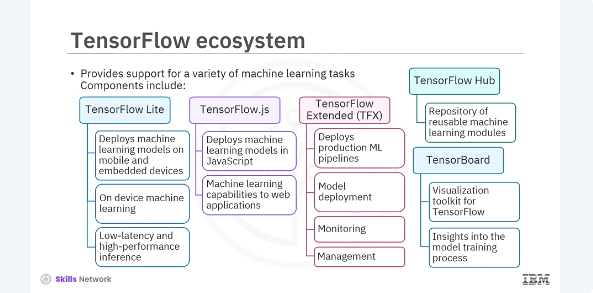

Overview of Tensorflow 2.x
Welcome to this video that gives an overview of TensorFlow 2.X. After watching this video, you'll be able to. Describe the key features of TensorFlow 2.X, list the benefits of eager execution. Describe the integration of Keras with TensorFlow, list the benefits of Keras integration with TensorFlow. List the components of TensorFlow ecosystem. TensorFlow is an open source platform for machine learning developed by Google. Since its inception, TensorFlow has become one of the most popular frameworks for machine learning and deep learning applications. It provides comprehensive tools to build and deploy machine learning models across various environments from servers to edge devices. In this overview, we'll cover the key features of TensorFlow 2.X, including eager execution, high level APIs, and the extensive TensorFlow ecosystem. TensorFlow 2. X has several key features that make it powerful and user friendly. Let's dive into some of the most important ones.

Eager execution. This feature makes TensorFlow more intuitive by executing operations immediately, which is great for debugging and interactive programming. Intuitive high level APIs. TensorFlow 2.X integrates Keras as its high level API, simplifying the process of building and training models. Support for various platforms and devices. TensorFlow supports deployment across multiple platforms, including mobile, web, and emitted devices, making it highly versatile, scalability and performance. TensorFlow allows for seamless scaling across CPUs, GPUs, and TPUs, optimizing performance for large scale machine learning tasks. Rich ecosystem. TensorFlow's ecosystem includes a wide range of tools and libraries that enhance its capabilities, such as TensorFlow Light, TensorFlow JS, and TensorFlow extended TFX. These features collectively contribute to TensorFlow status as a leading framework in the machine learning community.

Eager execution is a major enhancement in TensorFlow 2.X that makes the framework more user friendly and flexible. It allows operations to be executed immediately without building graphs, which simplifies the debugging process and facilitates interactive programming. This mode of execution is especially beneficial for beginners and for tasks that require dynamic model behaviors.

Some of the benefits of eager execution are as follows, improved debugging. By executing operations immediately, eager execution provides immediate feedback, making it easier to identify and fix errors. Simplified code. Without the need to build static computation graphs, the code is more straightforward and easier to understand. Here is an example of a simple TensorFlow code.
Interactive development. Eager execution supports interactive programming, which is ideal for exploratory research and development.

TensorFlow 2. X integrates Keras as its high level API, which greatly simplifies the process of building and training deep learning models. Keras provides a user friendly interface that abstracts much of the complexity involved in neural network programming.

The benefits of Keras integration with TensorFlow are as follows. User friendly. Keras allows for the creation of models using simple and concise code. Modular and composable. It supports building models in a modular fashion, where layers and blocks can be easily combined. Extensive documentation. Keras comes with comprehensive documentation and numerous examples facilitating learning and implementation.
from tensorflow.keras.models import Sequential
from tensorflow.keras.layers import Dense
# Define a simple feedforward neural network
model = Sequential([
Dense(64, activation='relu', input_shape=(784,)),
Dense(10, activation='softmax')
])
# Compile the model
model.compile(optimizer='adam',
loss='sparse_categorical_crossentropy',
metrics=['accuracy'])
In this example, you define a simple neural network with one hidden layer and compile it using the atom optimizer. The integration of Keras and TensorFlow 2.X streamlined to the workflow and makes the model building and training more accessible.

TensorFlow has a rich ecosystem of tools and libraries that extend its capabilities and provide support for a variety of machine learning tasks. Some key components of the TensorFlow ecosystem include TensorFlow light, a lightweight solution for deploying machine learning models on mobile and embedded devices. It enables on device machine learning, providing low latency and high performance inference, TensorFlow JS, a library for training and deploying machine learning models in Java script environments such as web browsers and no JS. This allows developers to bring machine learning capabilities to web applications. TensorFlow extended TFX, an end-to-end platform for deploying production ML pipelines. TFX provides tools for model deployment, monitoring, and management, ensuring that machine learning models perform reliably in production environments. TensorFlow hub, a repository of reusable machine learning modules, which can be easily integrated into TensorFlow applications to accelerate development. TensorBoard, a visualization toolkit for TensorFlow that provides insights into the model training process, including metrics, graphs, and other useful data. These components make TensorFlow a comprehensive platform that supports the entire machine learning life cycle from development to deployment.
In this video, you learned that. TensorFlow 2.X is a powerful and flexible platform for machine learning. Its key features such as eager execution, high level APIs, and a rich ecosystem of tools, make it an ideal choice for developing and deploying machine learning models. Understanding these features and capabilities will help you build and deploy machine learning models more effectively, whether you're working on research, prototyping, or production applications.